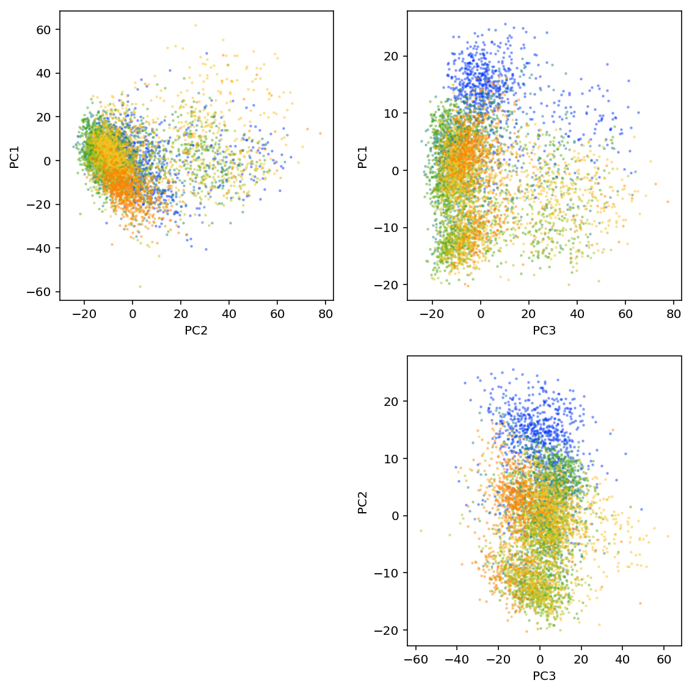
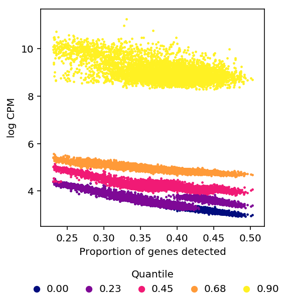
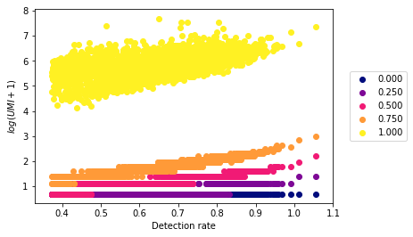
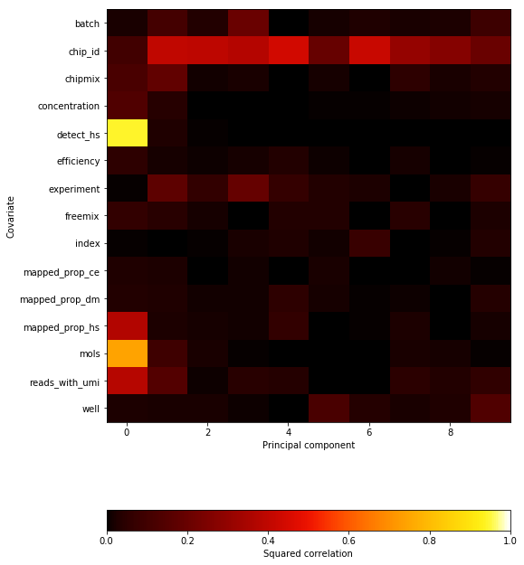

Dimensionality reduction
Introduction
The fundamental inference task is to infer \(p(z_i \mid x_i)\), where \(x_i\) is a \(p\)-dimensional observation, \(z_i\) is a \(k\)-dimensional latent variable, and \(k \ll n\).
Why do we want to do this?
- determine how much variation in the data is explained by known technical factors
- decide whether, and how to remove that variation before trying to explain the data using biological covariates
Importantly, these analyses are not directly usable for confounder correction for QTL mapping. Instead, we first need to learn the underlying distributions of the data and then perform dimensionality reduction on those parameters. However, it will be important to consider what data went into learning those distributions, and how to incorporate known and inferred confounders into that estimation procedure.
Here, we perform the following analyses:
- We perform PCA on the post-QC data and show that most variation is explained by gene detection rate
- We confirm in the real data that the entire distribution of non-zero gene expression is correlated with gene detection rate
- We show that regressing out the percentiles of gene expression eliminates the dependence on gene detection rate
Read the data
Read the full data matrix and apply the QC filters.
umi = pd.read_table('/project2/mstephens/aksarkar/projects/singlecell-qtl/data/scqtl-counts.txt.gz', index_col=0) annotations = pd.read_table('/project2/mstephens/aksarkar/projects/singlecell-qtl/data/scqtl-annotation.txt') keep_samples = pd.read_table('/project2/mstephens/aksarkar/projects/singlecell-qtl/data/quality-single-cells.txt', index_col=0, header=None) keep_genes = pd.read_table('/project2/mstephens/aksarkar/projects/singlecell-qtl/data/genes-pass-filter.txt', index_col=0, header=None) umi = umi.loc[keep_genes.values.ravel(),keep_samples.values.ravel()] annotations = annotations.loc[keep_samples.values.ravel()]
umi.shape
(10099, 5566)
Principal components analysis
Use PPCA (Tipping et al 1999) to incorporate gene-specific mean
expression. Use the edgeR pseudocount.
libsize = annotations['mol_hs'].values pseudocount = .5 * libsize / libsize.mean() log_cpm = (np.log(umi + pseudocount) - np.log(libsize + 2 * pseudocount) + 6 * np.log(10)) / np.log(2)
ppca = skd.PCA(n_components=10) loadings = ppca.fit_transform(log_cpm.values.T)
plt.clf() fig, ax = plt.subplots(2, 2) fig.set_size_inches(8, 8) N = len(set(annotations['batch'])) for i in range(2): for j in range(i, 2): for k, batch in enumerate(sorted(set(annotations['batch']))): ax[i][j].scatter(loadings[annotations['batch'] == batch,i], loadings[annotations['batch'] == batch,j + 1], c=colorcet.cm['rainbow'](k / N), s=4, marker='+', alpha=0.5) ax[i][j].set_xlabel('PC{}'.format(j + 2)) ax[i][j].set_ylabel('PC{}'.format(i + 1)) ax[1, 0].set_axis_off() fig.tight_layout()

plt.clf() fig, ax = plt.subplots(2, 2) fig.set_size_inches(8, 8) N = len(set(annotations['batch'])) for i in range(2): for j in range(i, 2): for k, batch in enumerate(sorted(set(annotations['batch']))): ax[i][j].scatter(loadings[annotations['batch'] == batch,i], loadings[annotations['batch'] == batch,j + 1], c=colorcet.cm['rainbow'](k / N), s=4, marker='+', alpha=0.5) ax[i][j].set_xlabel('PC{}'.format(j + 2)) ax[i][j].set_ylabel('PC{}'.format(i + 1)) ax[1, 0].set_axis_off() fig.tight_layout() plt.savefig('pca.pdf')
<matplotlib.figure.Figure at 0x7f55719c3e10>
Correlate PCs with known continuous covariates by computing squared Pearson correlation.
Correlating PCs with individual (or other discrete covariates) is non-obvious because it is a categorical variable, and simply recoding it as integer is sensitive to ordering. Instead, regress the loading of each cell on each principal component \(l_{ij}\) against indicator variables for each individual \(X_{ik}\).
\[ l_{ij} = \sum_j X_{ik} \beta_{jk} + \mu + \epsilon \]
From the regression fit, we can compute the coefficient of determination \(R^2\) for each PC \(j\):
\[ 1 - \frac{l_j - X \hat{\beta}_j}{l_j - \bar{l_j}} \]
def extract_covars(annotations): return pd.Series({ 'Reads': annotations['umi'], 'Molecules': annotations['molecules'], 'Mapped %': annotations['umi'] / annotations['mapped'], 'Genes detected': annotations['detect_hs'], }) def correlation(pcs, cont_covars): """Return squared correlation between principal components and covariates pcs - DataFrame (n x k) cont_covars - DataFrame (n x q) """ result = [] for i in pcs: for j in cont_covars: keep = np.isfinite(cont_covars[j].values) result.append([i, j, np.square(st.pearsonr(pcs[i][keep], cont_covars[j][keep]))[0]]) return pd.DataFrame(result, columns=['pc', 'covar', 'corr']) def categorical_r2(loadings, annotations, key, name): categories = sorted(annotations[key].unique()) onehot = np.zeros((annotations.shape[0], len(categories)), dtype=np.float32) onehot[np.arange(onehot.shape[0]), annotations[key].apply(lambda x: categories.index(x))] = 1 m = sklm.LinearRegression(fit_intercept=True, copy_X=True).fit(onehot, loadings) return pd.DataFrame({ 'pc': np.arange(10), 'covar': name, 'corr': 1 - np.square(loadings - m.predict(onehot)).sum(axis=0) / np.square(loadings - loadings.mean(axis=0)).sum(axis=0)})
cont_covars = annotations.apply(extract_covars, axis=1) cat_covars = list(zip(annotations[['batch', 'experiment', 'chip_id', 'well']], ['Batch', 'C1 chip', 'Individual', 'Well']))
corr = pd.concat( [correlation(pd.DataFrame(loadings), cont_covars)] + [categorical_r2(loadings, annotations, k, n) for k, n in cat_covars]) corr = corr.pivot(index='covar', columns='pc')
def plot_pca_covar_corr(pca, corr): plt.clf() fig, ax = plt.subplots(2, 1, gridspec_kw={'height_ratios': [.25, .75]}, sharex=True) fig.set_size_inches(4, 5) ax[0].bar(np.arange(len(pca.components_)), pca.explained_variance_ratio_) ax[0].set_xticks(np.arange(len(pca.components_))) ax[0].set_xticklabels([str(x) for x in np.arange(1, len(pca.components_) + 1)]) ax[0].set_xlabel('Principal component') ax[0].set_ylabel('PVE') im = ax[1].imshow(corr.values, cmap=colorcet.cm['fire'], vmin=0, vmax=1, aspect='auto') cb = plt.colorbar(im, ax=ax[1], orientation='horizontal') cb.set_label('Squared correlation') ax[1].set_xlabel('Principal component') ax[1].set_yticks(np.arange(corr.shape[0])) ax[1].set_yticklabels(corr.index) ax[1].set_ylabel('Covariate') plt.gcf().tight_layout()
%config InlineBackend.figure_formats = set(['svg']) plot_pca_covar_corr(ppca, corr)
Effect of dropout on gene expression
Hicks et al also claim that the entire distribution of non-zero measurements depends on detection rate. They show this by plotting the percentiles of non-zero expressed genes in each cell versus detection rate in that cell.
def plot_quantiles_vs_detection(umi, annotations, quantiles=None, pseudocount=None): if quantiles is None: quantiles = np.linspace(0, 1, 5) else: assert (quantiles >= 0).all() assert (quantiles <= 1).all() vals = np.nanpercentile(np.ma.masked_equal(umi.values, 0).astype(float).filled(np.nan), 100 * quantiles, axis=0, interpolation='higher') if pseudocount is None: # log CPM with per-cell pseudocount total_counts = umi.sum() pseudocount = .5 * total_counts / total_counts.mean() label = 'log CPM' vals = np.log(vals + pseudocount.values.reshape(1, -1)) - np.log(total_counts + 2 * pseudocount).values.reshape(1, -1) + 6 * np.log(10) else: vals = np.log(vals + pseudocount) label = '$\log({} + {:.3g})$'.format('\mathrm{UMI}', pseudocount) plt.clf() plt.gcf().set_size_inches(4, 4) for q, v in zip(quantiles, vals): plt.scatter(annotations['detect_hs'] / keep_genes.shape[0], v, c=colorcet.cm['inferno'](q), label='{:.2f}'.format(q), s=2) plt.legend(title='Quantile', frameon=False, fancybox=False, bbox_to_anchor=(1, .5), loc='center left') plt.xlabel('Proportion of genes detected') plt.ylabel(label)
We recapitulate the main result of Hicks et al in our data.
%config InlineBackend.figure_formats = set(['retina']) plot_quantiles_vs_detection(umi, annotations)

log CPM as defined in edgeR uses a pseudocount which depends on library
size, but the derivation in Hicks et al is for \(\log(X + \epsilon)\) where
\(\epsilon\) is constant across cells.
Using constant \(\epsilon\) changes the shape of the relationship between quantiles of non-zero expression and detection rate, but does not remove the relationship.
plot_quantiles_vs_detection(umi, annotations, pseudocount=1)

plot_quantiles_vs_detection(umi, annotations, pseudocount=1e-3)

PCA on bicentered data
Bi-center the data, by fitting a model where observations depend on a row-mean and a column-mean and then subtracting the means from each entry.
\[ x_{ij} \sim N(u_i + v_j, \sigma^2) \]
def sample_feature_means(obs, max_iters=10): """Fit per-feature and per-sample means x_ij ~ N(u_i + v_j, sigma^2) Inputs: x - ndarray (num_samples, num_features) Returns: sample_means - ndarray (num_samples, 1) feature_means - ndarray (num_features, 1) """ n, p = obs.shape sample_means = np.zeros((n, 1)) feature_means = np.zeros((1, p)) resid = obs.var() llik = -.5 * np.sum(np.log(2 * np.pi * resid) + (obs - feature_means - sample_means) / resid) # Coordinate ascent on llik for _ in range(max_iters): sample_means = np.mean(obs - feature_means, axis=1, keepdims=True) feature_means = np.mean(obs - sample_means, axis=0, keepdims=True) # By default, np divides by N, not N - 1 resid = np.var(obs - feature_means - sample_means) update = -.5 * np.sum(np.log(2 * np.pi * resid) + (obs - feature_means - sample_means) / resid) print(update) if np.isclose(update, llik): return sample_means, feature_means.T else: llik = update raise ValueError("Failed to converge")
def plot_bicentered_pca(log_cpm, annotations, cont_covars, cat_covars): sample_means, feature_means = sample_feature_means(log_cpm.values.T) ppca = skd.PCA(n_components=10) loadings = ppca.fit_transform(log_cpm.values.T - sample_means - feature_means.T) corr = pd.concat( [correlation(pd.DataFrame(loadings), cont_covars)] + [categorical_r2(loadings, annotations, k, n) for k, n in cat_covars]) corr = corr.pivot(index='covar', columns='pc') plot_pca_covar_corr(ppca, corr)
%config InlineBackend.figure_formats = set(['svg']) plot_bicentered_pca(log_cpm, annotations, cont_covars, cat_covars)
Kernel PCA
The dependency of non-zero gene expression on gene detection rate is non-linear, so use kernel PCA to perform non-linear dimensionality reduction (Schölkopf et al 1998). The basic idea is to non-linearly map the original points into a different space, and perform PCA in that space.
The method eliminates the second technical PC by accurately modeling the non-linearity in the data, but it fails to eliminate the first technical PC because it does not include sample-specific mean parameters.
It is non-trivial to add such parameters because we have to center the projections of the samples, and the key algorithmic trick used is that we never have to actually compute the projections. In particular, we assume the radial basis function kernel, which projects the data into infinite dimensional space, making it impossible to compute the projections.
kpca = skd.KernelPCA(kernel='rbf', n_components=10) loadings_kpca = kpca.fit_transform(log_cpm.values.T) corr_kpca = pd.concat( [correlation(pd.DataFrame(loadings_kpca), cont_covars)] + [categorical_r2(loadings_kpca, annotations, k, n) for k, n in cat_covars]) corr_kpca = corr_kpca.pivot(index='covar', columns='pc')
%config InlineBackend.figure_formats = set(['svg']) plt.clf() plt.gcf().set_size_inches(8, 12) im = plt.imshow(corr_kpca.values, cmap=colorcet.cm['fire'], vmin=0, vmax=1, aspect='auto') cb = plt.colorbar(im, orientation='horizontal') cb.set_label('Squared correlation') plt.gca().set_xlabel('Principal component') plt.gca().set_yticks(np.arange(corr_kpca.shape[0])) plt.gca().set_yticklabels(corr_kpca.index) plt.gca().set_ylabel('Covariate') plt.gcf().tight_layout()
Text(0,0.5,'Covariate')

PCA on gene expression residuals
Although the dependency of the percentiles of non-zero gene expression on detection rate appears to be nonlinear, we can partially correct for it by regressing out the percentiles of expression from the expression values for each gene.
\[ y_{ij} = p_i \beta + \mu_j + \epsilon_{ij} \]
\[ \tilde{y}_{ij} = y_{ij} - p_i \hat\beta - \hat\mu_j \]
normalized_percentiles = np.percentile(log_cpm, 100 * np.linspace(0, 1, 5), axis=0)
log_cpm_residuals = log_cpm.apply(lambda y: y - sklm.LinearRegression(fit_intercept=True).fit(normalized_percentiles.T, y).predict(normalized_percentiles.T), axis=1)
%config InlineBackend.figure_formats = set(['svg']) plot_bicentered_pca(log_cpm_residuals, annotations, cont_covars, cat_covars)
PCA on quantile-normalized log CPM
Regression against the percentiles of gene expression seems like an inelegant way of performing quantile normalization. However, quantile normalizing doesn't work.
import rpy2.robjects import rpy2.robjects.numpy2ri numpy2ri = rpy2.robjects.numpy2ri.numpy2ri def qqnorm(x): """Wrap around R qqnorm""" return np.asarray(rpy2.robjects.r['qqnorm'](numpy2ri(x))[0])
normed = log_cpm.apply(qqnorm, axis=0)
%config InlineBackend.figure_formats = set(['svg']) plot_bicentered_pca(normed, annotations, cont_covars, cat_covars)